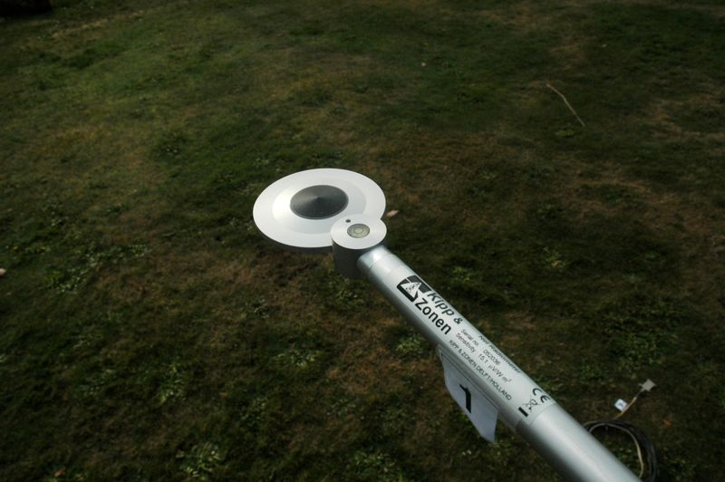

|
|
|
Net all-wave radiometer with level |

The surface that affects the signal of the lower hemisphere of the net radiometer (the 'radiative source area') is the area directly underneath the sensor. A rule-of-thumb suggests that about 90% of the signal comes from an area that is 3 times in radius of the height the radiometer is mounted above ground.
Page: 4 of 11 (36%)